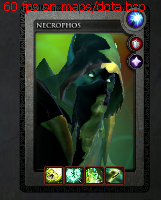

Nah akhirnya sampai juga disini, diatas saya sudah menyebutkan bahwa di DOTA 2 ini kita hanya perlu mengontrol satu hero bukan seperti game-game RTS lainya. Jadi di DOTA 2 ini ada dua tim atau faction, yaitu Dire dan Radiant. Dire berlokasi di kanan atas map, sedangkan Radiant di kiri bawah map. Apabila anda main DOTA 2 anda akan masuk ke antara dua tim tersebut secara acak, meski begitu sebenarnya Dire dan Radiant ini tidak begitu berbeda, yang berbeda hanya texture atau tampilannya dan jalan-jalanannya. Tetapi yang paling membedakan ialah adanya suatu creep yang sangat kuat di daerah Dire yang bernama Roshan.
Tujuan utama
Tujuan utama dalam bermain DOTA 2 yaitu adalah untuk menghancurkan ancient musuh. Yang manakah ancient itu? ancient itu terletak dekat dengan fountain. Ancient adalah seperti gambar berikut (kiri: dire, kanan: radiant)
Apabila salah satu dari ancient itu sudah hancur, maka tim yang ancient nya hancur kalah. Lalu apa itu fountain? yaitu tempat awal kita respawn, fountain memiliki attack tersendiri yang kuat dan dapat membunuh siapapun dengan cepat, maka dari itu apabila ada musuh yang berani masuk ke fountain, dia akan segera mati, meski begitu musuh dapat tetap masuk ke fountain dalam keadaan tertentu.
Perlu diketahui bahwa anda tidak bisa menyelinap lalu langsung menghancurkan ancient musuh, ancient tersebut hanya dapat dihancurkan apabila anda sudah menghancurkan 3 tower 2 barracks dalam 1 lane dan 2 tower dekat ancient. Nah untuk menghancurkan tower pun tidak mudah, maka strategi diperlukan.
Lane
Lane adalah jalanan-jalanan menuju tim musuh, di DOTA 2 terdapat 3 lane yaitu top, middle dan bottom atau atas, tengan dan bawah. Apabila anda berada di tim radian, top adalah hardlane/offlane dan bottom adalah easylane/safelane, namun apabila anda berada di tim Dire maka top adalah safelane anda dan bottom adalah hardlane anda. Strategi dasarnya biasanya adalah 2 hero atas, 1 tengah dan 2 bawah. Pada awal game atau early game anda dapat memilih dimana anda akan berada, anda bisa juga berpindah tempat kapanpun untuk membantu teman anda. Tujuan berada di lane ini adalah untuk push atau mendorong creeps dan tim untuk menghancurkan tower di setiap lane, selain itu sebenarnya kita berada di lane ini adalah untuk mendapatkan XP dan Gold, nah untuk mendapatkanya itu anda membutuhkan farm atau membunuh creep-creep musuh. Setiap lane memiliki 3 tower dan 2 barracks. Nah kalo bisa kita nyicil untuk menghancurkan tower-tower tersebut. Pada awal game memang hero-hero akan menuju lane-lane dengan formasi 2 1 2, namun terkadang ada hero yang tidak melakukan farm di lane namun di jungle atau hutan.
Perlu diketahui middle lane atau lane tengah adalah lane untuk hero-hero yang dapat membantu lane atas atau bawah, karena di midlane biasanya hero solo atau sendiri maka dia akan mendapatkan XP lebih cepat dibanding lane-lane lainya, maka dia dapat membantu lane lain dengan mudah. Perlu juga diketahui bahwa midlane adalah lane yang harus bertanggung jawab, karena apabila anda gagal farm di mid maka akan dapat membuat tim kalah.
XP dan Gold
XP atau experience dan gold ini bisa anda dapatkan dengan banyak cara. XP adalah point yang akan memberikan anda level, setiap level anda akan dapat mempelajari kekuatan baru. Sedangkan gold adalah uang untuk membeli item. Nah XP ini akan didapat setiap kali ada unit musuh (creep, hero dll) yang mati dekat dengan anda yaitu berjarak 1300 radius dari hero anda. Sedangkan gold akan anda dapatkan setiap kali anda last hit atau membunuh creep atau hero saat terakhir, menjadi hero yang hit dari sebelum sampai mati. Anda juga dapat meng-deny experience musuh dengan deny creep, hal ini akan membuat musuh menjadi lambat dalam naik level.
Last hit
Nah untuk menjadi seorang pemain DOTA 2 yang baik tentu anda harus jago dalam last hit, setiap hero memiliki damage dan attack speed yang berbeda, maka untuk meng-hit creep agar last hit tidak mudah dan memerlukan kepekaan tersendiri. Agar mudah anda tidak perlu hit creep sama sekali, tetapi hit hanya saat darah creep sudah terlihat sangat sedikit, dan perkirakan attackspeed dan damage apakah cukup atau tidak. Anda juga bisa spam klik kanan dan spam tombol s di keyboard agar bisa pas dan mengurangi animasi.
Creeps
Lane creeps
Radiant dan Dire masing-masing memiliki lane creeps. Creep radiant berwarna hijau dan Dire berwarna merah, ada tiga tipe creep yaitu melee, ranged dan siege. Melee creep adalah creep yang menggunakan senjata pedang jadi dia hanya dapat close combat, ranged adalah creep yang biasanya dibelakang creep-creep melee yang menggunakan senjata yang jarak jauh, sedangkan siege adalah creep catapault yang damagenya besar terhadap bangunan. Darah yang dimiliki ranged lebih kecil dibandingkan melee, maka lebih mudah untuk meng-lasthitnya. Creeps ini selalu muncul setiap detik ke-30.

Apabila tadi adalah lane creep, ada juga neutral creep yang berada di hutan-hutan. Apakah fungsi creep-creep ini? fungsinya adalah untuk kita dapat mendapatkan XP dan gold tambahan, maka dari itu ada beberapa hero yang memiliki kekuatan tertentu yang dapat farm dengan cara hit creep di hutan bukan dengan creep lane. Neutral creep ada juga kelasnya, ada yang mudah, sulit dan sangat sulit yaitu ancient neutral creeps. Berikut adalah lokasi neutral creeps.
Selain itu ada juga neutral creep yang sangat kuat yaitu Roshan. Roshan hanya ada satu yaitu di lokasi Dire. Apabila roshan terbunuh dia akan mengdrop Aegis of immortality, apabila suatu hero mengambilnya maka hero tersebut dapat hidup kembali apabila mati. Roshan akan respawn setiap lima menit aegis hilang. Apabila Aegis tidak tergunakan setelah 5 menit maka dia akan hilang tetapi meng-regen hero pemegang aegis itu. Apabila Roshan telah terbunuh lebih dari 2 kali maka ia akan mengdrop item bernama cheese. Roshan ini sulit untuk dibunuh, roshan akan mudah terbunuh apabila hero sudah kuat, namun ada juga beberapa hero yang dapat membunuh roshan dengan cepat tanpa harus kuat terlebih dahulu.
Tower
Tadi sudah disebutkan bahwa setiap lane memiliki 3 tower, nah tower yang dapat dihancurkan adalah yang paling depan, apabila tower paling depan sudah hancur maka tower selanjutnya dapat dihancurkan. Apabila tidak ada lane-creep dari tim kita dekat dengan tower maka tower memiliki backdoor protection dan akan sangat-sangat sulit untuk dihancurkan.
Tipe-tipe hero (atribut)
Nah di DOTA 2 ini hero memiliki 3 tipe yaitu Agility, Strength dan Intelligence. Agility adalah tipe hero yang memiliki keahlian pada kecepatan menyerangnya (attack speed) dan armor, tipe ini biasanya adalah tipe yang kuat diakhir game (late game). Strenth adalah tipe hero yang biasanya kuat healthpoolnya lebar dan regenerasi darah atau hp lebih cepat, tipe ini biasanya adalah hero yang dapat mendapat banyak damage dan membiarkan musuh menargetkan dirinya. Intelligence adalah tipe untuk hero yang lebih banyak menggunakan kekuatannya maka dari itu mereka memiliki manapool lebih lebar dan mana regen lebih cepat, tipe ini biasanya adalah hero support yang membantu tim. Setiap hero memiliki semua atribut, namun ada primary atributte yaitu atribut utama.
Setiap hero memiliki point atribut yang berbeda-beda, setiap poin akan menambah satu damage dan stats yang dimiliki, misalnya hero dengan primary agility memiliki attack speed 0.2/s, 2 armor dan 10 damage, lalu dia membeli item yang menambah stats (+agility) misalnya +10agility, maka attack speed menjadi 0.8/s, 4 armor dan 20 damage.
- Untuk Strength, setiap poinya menambah 19 health untuk hp maksimum dan menambah 0.03hp/detik. Apabila strength adalah primary attribute, maka setiap 1 poinya menambah 1 damage
- Untuk Agility, setiap poinya menambah 0.14 armor dan menambah 1 attack speed. Apabila agility adalah primary attribute, maka setiap 1 poinya menambah 1 damage
- Untuk Intelligence, setiap poinya menambah 13 mana untuk mana maksimum dan menambah regenerasi 0.04/detik. Apabila Intelligence adalah primary attribute, maka setiap 1 poinya menambah 1 damage
Role atau bagian
Role atau bagian adalah suatu posisi atau tugas dari hero. Sebenarnya role ini ada banyak dan sebenarnya juga role ini dinamis, yakni pada saat tertentu hero bisa merubah rolenya, namun ada juga official role yang menyatakan role asli dari hero tersebut.
Official role
Nah dari semua role dibawah ini sebenarnya hanya 3 role yang lebih terlihat. Jadi setiap hero itu pasti salah satu antara carry, support atau nuker, nah role-role lainya adalah sub-role yang dapat dimiliki oleh 3 role diatas. Namun ada juga beberapa hero yang memiliki dual-role, artinya hero itu dapat efektif menjadi role yang mana saja diantara 3 role. Tapi memang yang sangat dominan adalah carry dan support, nuker biasanya bisa menjadi semi-carry atau semi-support.
Carry
Carry adalah role untuk hero-hero yang lemah diawal, kuat diakhir game. Carry sangat membutuhkan items dan level, jadi mereka memang sangat membutuhkan farm untuk mendapatkan XP dan gold. Carry ini kekuatanya ada di attack dan attackspeednya, jadi yang dia butuhkan adalah damage. Dikarenakan oleh hal ini maka memang kebanyakan carry adalah hero agility yang kekuatanya berada di attacknya. Ability atau kekuatan atau skill yang dimiliki hero tipe ini biasanya adalah skill yang bukan untuk membunuh melainkan untuk melemahkan musuh dengan melambatkan, stun, disable dan sebagainya, sedangkan untuk membunuh musuh yaitu dengan attack nya (klik kanan). Meski begitu skill juga dapat digunakan untuk membunuh.
Support
Support adalah role yang biasanya tugasnya adalah membantu tim. Hero support tidak membutuhkan banyak last hit, melainkan menjaga carry untuk last hit di awal game. Hero support biasanya adalah hero intelligence yang lebih menggunakan skillnya daripada attacknya. Apabila anda menggunakan hero support belilah courier, observer ward, sentry ward, dust of appearance, smoke of deceit, gem of true sight. Perlu diketahui bahwa support tidak begitu membutuhkan item, berbeda dengan carry yang sangat bergantung pada item. Maka dari itu support tak butuh last hit. Apabila anda akan membeli item tetapi tim membutuhkan sesuatu, dahulukanlah sesuatu untuk tim itu. Yang sangat penting adalah di game awal atau early game cobalah untuk selalu deny dan jangan ambil last hit sama sekali, kecuali sedang sangat dibutuhkan. Juga apabila anda ranged hero cobalah untuk selalu hit hero musuh agar mereka kesulitan dalam farming.
Nuker
Hero ini adalah hero yang dapat membunuh hero dengan menggunakan skillnya dengan cepat, hero ini biasanya dapat membunuh hero sendiri tanpa bantuan. Hero seperti ini biasanya memiliki skill untuk disable dan skill dengan damage besar
Disabler
Hero yang memiliki role ini adalah hero yang dapat mengganggu musuh, bisa dengan membuat lambat, stun, menghilangkan untuk sementara dan sebagainya. Hero yang dengan role ini biasanya juga membeli item untuk mebambah disablenya
Jungler
Role ini adalah role untuk hero-hero yang dapat farm dengan membunuhi neutral creep di hutan saat game masih awal. Hero dengan role ini biasanya memiliki skill tertentu yang membuatnya tidak mudah mati saat farm di hutan, contohnya hero ini dapat summon unit, dan neutral akan menyerang unit bukan pada hero, maka ia akan dapat bertahan selagi farm
Pusher
Hero dengan role ini adalah hero yang dapat dengan mudah menghancurkan tower dan memusnahkan lane creep dengan cepat. Biasanya mirip dengan hero jungler yaitu mereka memiliki skill untuk summon unit agar dapat membantunya menyerang tower dan creep. Hero seperti tentu membutuhkan cara untuk kabur dengan cepat, biasanya memiliki skill untuk kabur dengan cepat.
 Durable
Durable
Durable bisa kita sebut juga tanker adalah hero-hero yang memiliki health pool tebal, dan termasuk sangat kuat. Hero-hero seperti ini biasanya adalah hero strength.
Escape
Hero yang memiliki role ini biasanya memiliki skill untuk kabur dengan cepat, hero seperti ini cocok untuk menyerang sampai jauh.
Initiator
Hero initiator biasanya memiliki skill untuk memulai pertarungan, misalnya stun, atau sesuatu yang memperlambat musuh, skillnya mirip dengan disable
Lane support
Hero ini umumnya support, namun yang membedakan mereka lebih baik dalam menjaga carry untuk farm/lasthit di lane saat early game.
Unofficial role
Unofficial ini bisa dibilang bukan role sebenarnya, namun tetap perlu diketahui juga.
Hard carry
Hard carry adalah hero carry yang sangat membutuhkan farm dan level untuk bisa membunuh musuh. Hard carry hero biasanya sangat kuat di late game dan sangat sulit untuk ditaklukan, hard carry lah yang bertanggung jawab untuk menang-kalahnya tim di late game.
Semi carry
Hero semi-carry adalah hero yang tidak terlalu membutuhkan banyak farm untuk bisa menjadi kuat tetapi yang mereka butuhkan adalah level (XP). Mereka biasanya cocok untuk mengisi lane mid diawal game.
Ganker
Hero ganker sebenarnya mirip dengan hero semi-carry, namun yang ini biasanya lebih sering membantu atau meng-gank musuh di awal dan pertengahan game agar membantu tim tidak menjadi kalah. Hero ganker inilah yang sangat cocok untuk mengisi mid lane di awal game.
Roamer
Hero roamer biasanya membantu lane yang sedang kesulitan diawal game, hero roamer biasanya adalah support.
Offlaner
Hero offlaner adalah hero yang mengisi offlane/hardlane di early game. Mereka disebut offlaner karena mereka dapat sendirian di lane ini tanpa membahayakan dirinya. Hero offlaner biasanya memiliki skill untuk kabur dengan mudah. Hero ini sangat membantu apabila di tim ada hero tipe jungler.

Lingkaran yang paling besar di kanan atas adalah tipe hero (intelligence), yang dibawahnya adalah role-role yang dimilikinya.